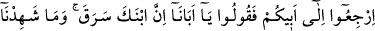
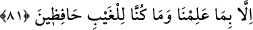
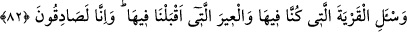

verdiğiniz sözü tutmadığınızı “bilmiyor musunuz?” O zaman “Oysa biz onun iyiliğini
istemekteyiz.” “Biz onu mutlaka koruruz.” (Yûsuf, 12/11, 12) demiştiniz. Bu
bakımdan Yûsuf’un başına gelenlerden dolayı zâten töhmet altında iken böylesine kötü
bir durumdan kurtulmamız mümkün değildir. “Babam bana” kendisine dönmem için
“izin verinceye” -Öyle anlaşılıyor ki Yâkub’un izni olmadan geri dönmemek üzere
yemin etmişlerdi.- “veya benim için Allah” verdiğim sözü bozmayacak şekilde
Mısır’dan çıkmama ya da bir sebep halk edip Bünyamin’in kurtulmasına
“hükmedinceye kadar bu yerden asla ayrılmayacağım.” Mısır arazisinden ayrılıp
gitmeyeceğim.
“O hükmedenlerin en hayırlısıdır.” Çünkü ancak hak ve adâlet üzere hükmeder.
Kâşifî şöyle der: O’nun hükmünde meyil ve müdâhene yoktur.
81. Babanıza dönün ve deyin ki: “Ey babamız! Şüphesiz oğlun hırsızlık etti. Biz,
bildiğimizden başkasına şahitlik etmedik. Biz gaybın bekçileri değiliz.”
“Babanıza dönün ve deyin ki: “Ey babamız!” Görünüşe göre “Şüphesiz oğlun
hırsızlık etti. “Biz” onun hırsızlık ettiğine “bildiğimizden başkasına şâhidlik
etmedik.” su tasının onun yükünden çıktığına şâhid olduk.
“Biz gaybın” bu durumun içyüzünün “bekçileri değiliz.” İş gerçekten bizim
gördüğümüz gibi midir, yoksa tersine midir bilmiyoruz.
Yani zâhirde Bünyamin’in hırsız olduğunu gördük. Ama işin aslından haberdar değiliz
ki ona töhmet edelim. Melikin su tasını Bünyamin’in yüküne mi koydular, yoksa kendisi
mi bu işe girişti bizce meçhuldür.
Ayrıca onlar Yûsuf’un başına gelenler yüzünden töhmet altında olduklarından
büyükleri, bu töhmeti üzerlerinden izâle etmek için mübâlağalı konuşmalarını ve şöyle
demelerini emretti:
82. (İstersen) içinde bulunduğumuz şehre (Mısır halkına) ve beraber geldiğimiz
kervana sor. Biz gerçekten doğru söylüyoruz.”
Babanıza deyin ki: İstersen “İçinde bulunduğumuz şehre” Mısır halkına bir adam
gönder, hikâyenin aslını onlara sordur ki bizim doğru olduğumuz sana âşikâr olsun “ve
beraber geldiğimiz kervana sor.” Kervan, üzerlerinde yük bulunan develere denir. Yani